One WAR to package them all, One WAR to serve them all,
One
WAR to deploy them all and in JNDI bind them.
Оглавление
Как написать Java web-приложение
Процесс разработки программного обеспечения
Как создать Maven-проект из архетипа
Как добавить зависимости к Maven проекту
Как создать дескриптор web-приложения
Как подключить Persistance в проект
Как подключить JDBC ресурс в проект
Как подключить JDBC ресурс в Netbeans
Как добавить jar к Maven проекту
Как добавить Maven проект в Jenkins
Работа с файловыми ресурсами приложения
Как сгенерировать WSDL клиента
В браузере не видны изменения xslt-шаблона
Что делать, если ресурс отвечает 404 или 500
При запуске приложения возникает ошибка: java.lang.NoClassDefFoundError
Процесс разработки ПО условно разбивается на несколько стадий.
Локальная разработка - разработка и эксплуатация на локальном компьютере разработчика. Приложение запускается в IDE netbeans в локальном томкате, работает с локальным сервером БД (кроме крупных баз)
Разработка - эксплуатация и тестирование на общем сервере (devel)
Обкатка
(staging) - эксплуатация и тестирование
на общем сервере (demo)
Эксплуатация (production) - рабочая эксплуатация
Для того чтобы не повторять перечисленные в документе действия каждый раз, удобнее создавать проекты из готового архетипа Создать проект Netbeans: File - New Project. На 1 шаге выбрать Maven - Project from Archetype. На 2 шаге в строку поиска ввести jparestresource и выбрать jparestresource-archetype (должен быть настроен ~/.m2/settings.xml) На 3 шаге заполняем Project Name, Project Location, GroupId. Важно: параметры Group Id и Packages должны совпадать.
После создания проекта получается готовое к запуску приложение. Скрипт для создания БД лежит в {Other sources}/src/main/resources/META-INF/sql/schema.sql. Данный скрипт создает схему и одноименного пользователя в БД mysql. Если нет локально установленного сервера mysql, файле Web Pages/META-INF/context.xml строчку localhost:3306 необходимо заменить на devel:3306.
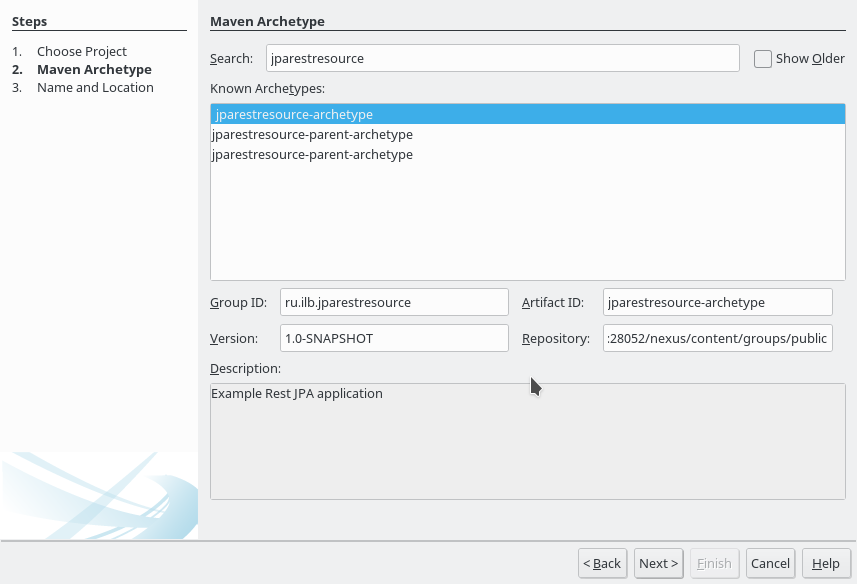
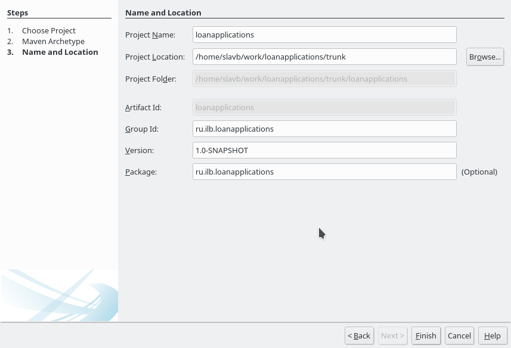
Созданный Maven-проект разделен в интерфейсе на группы: Web Pages, Source Packages и т.д.
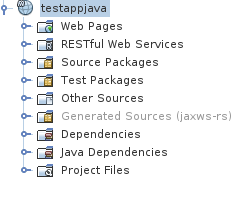
Web Pages - корень резвернутого web-приложения, здесь размещаются контекст приложения META-INF/context.xml дескриптор приложения WEB-INF/web.xml, статические ресурсы - schemas, stylesheets, jsp-страницы и др.
RESTful Web Services - дерево JAX-RS ресурсов приложения, строиться Netbeans по аннотациям классов
Source Packages - исходный код приложения
Test Packages - автотесты
Other Sources - ресурсы приложения (содержимое src/main/resources при сборке war попадает в WEB-INF/classes и доступно в classpath)
Generated Sources - сгенерированные по схемам и wadl классы и интерфейсы приложения
Dependencies - подключенные библиотеки (зависимости)
Java Dependencies - системные зависимости
Project Files - файлы проекта, самый интересный из них - pom.xml
Не все группы появляются сразу: RESTful Web Services, Test Packages, Other Sources, Generated Sources появляются при добавлении функционала в проект.
Примечание: обычно это делается напрямую в pom.xml используя технический прием copy — paste.
Чтобы добавить зависимость нужно щелкнуть правой кнопкой мыши на группе Dependencies в проекте и выбрать Add Dependency. Откроектся окошко, где в поле Query нужно ввести имя артефакта для поиска.
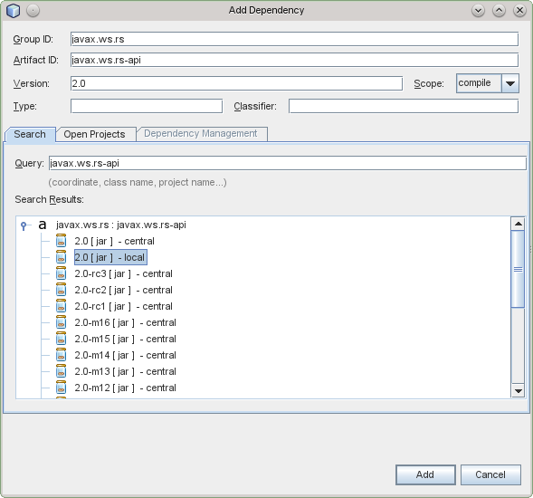
Если нужна документация по API какой-либо библиотеки в подсказках по Ctrl-пробел, нужно щелкнуть правой кнопкой мыши на библиотеке и скачать javadoc. После загрузки javadoc на баночке с зависимостями появиться буква J: . Там же можно скачать исходный код библиотеки. Отдельно стоит зависимость javaee-web-api. Если посмотреть ее свойства (Properties в контестном меню) или в файле pom.xml (в группе Project Files), видно что даная зависимость имеет свойство scope: provided. Это означает что данная библиотека уже предоставляется сервлет-контейнером (в частности tomcat) и не попадает в war файл.
Примечание: в приложении, создаваемом из архетипа, дескриптор web.xml уже создан. Если приложение разрабатывается из архетипа, данный пункт следует прочесть только для ознакомления.
Дескриптор сервлета - это файл {Web Pages}/WEB-INF/web.xml. Он содержит информацию названии, сервлетах приложения и другие настройки. Чтобы произвести настройку дескриптора сервлета, необходимо сначала этот дескриптор создать: File - New File, категория Web, Standart Deployment Descriptor (web.xml).
После создания дескриптора откроется редактор, через который можно настроить web-приложение интерфейсно или в исходном коде (вкладка Source).
Примечание: в приложении, создаваемом из архетипа, дескриптор persistence.xml уже создан. Если приложение разрабатывается из архетипа, данный пункт следует прочесть только для ознакомления.
Бибилиотека eclipselink (в прошлом Oracle TopLink) является референсной реализацией Java Persistence API 2.1 (JSR 338).
File - New File, категория Persistance, Persistance Unit. На втором этапе указать имя - вместо предложенного длинного имени можно указать одноименное с проектом или базой имя. В качестве соединиения указать любое из списка или создать новое, эта настройка все равно будет заменена на JDBC ресурс. Пример persistence.xml
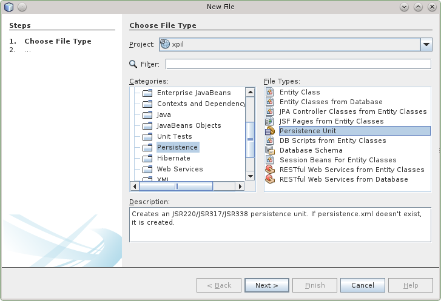 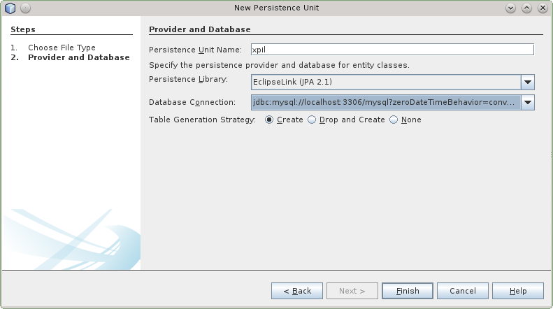
Настройка генерации модели БД производиться в файле persistance.xml. Файл persistance.xml расположен в Other sources -> src/main/resources -> META-INF -> persistance.xml. При старте JPA-приложения структура базы может «актуализироваться», как при запуске с "пустой" базой, так и с базой находящейся в устаревшем состоянии метаданных. Актуализация БД состоит из 1) актуализация структуры БД и 2) актуализации справочников. Актуализация структуры БД производиться eclipselink автоматически (с исключениями*, см. ниже). Для актуализации справочников пишется скрипт, обычно создаваемый "дампом" таблицы или используется аннотация @AutoPopulableRepository на репозитории-справочнике. Параметры генерации модели БД приведены в таблице:
|
Параметр |
Значение |
|---|---|
|
javax.persistence.schema-generation.database.action |
Режим генерации схемы БД из модели. Варианты значений: none, create, drop-and-create, drop, create-or-extend-tables. Для обычных JPA-приложений, генерирующих БД по модели должно стоять значение create-or-extend-tables. Значение применяется для упрощения выкладки приложения. Так как каждая база может быть в своем историческом состоянии, то доведение ее до актуальной версии может быть не простым занятием. При значении create-or-extend-tables eclipselink в момент деплоя приложения досоздает в БД несуществующие таблицы и добавляет отсутствующие поля и индексы. Но при этом чистки от "устаревших" (выкинутых из модели БД таблиц, полей) не происходит, так как о них eclispelink "не знает". Данная схема работает только в простых случаях - добавление таблицы, поля, индекса. В случае реструктуризации базы следует писать скрипт модификации метаданных вручную (или использовать другой инструмент поддержки версионности метаданных базы). На этапе разработки, когда схема БД меняется значительно, предпочтительнее использовать drop-and-create. При данной настройки при каждом деплое приложения таблицы модели удаляются и создаются заного. После реструктуризации БД следует вернуть значение create-or-extend-tables. Альтернативой drop-and-create может быть разовое удаление и пересоздание схемы БД, например скриптом из файла schema.sql. |
|
javax.persistence.sql-load-script-source |
Путь к файлу инициализации данных. Пример значения: META-INF/sql/data.sql. Данный файл будет исполнен после создания модели БД. Основное назанчение данного файла - заполнение и до-заполнение справочных таблиц. Вставку данных рекомендуется делать запросами INSERT IGNORE ... с указанием первичного ключа записи для того чтобы повторные записи не дублировались и не заваливали лог ошибками при наличии записей. |
Описать сущности и взаимосвязи между ними. См. https://jeddict.github.io/page.html?l=tutorial/QuickStart#CE
Наиболее часто используемые связи
M:1 — наиболее частая связь между сущностями. Может быть односторонней и двухсторонней. Отличие двухсторонней связи заключается в том, что одновременно создается обратная связь 1:M.
Двухсторонняя связь M:1 сложнее. Работа с ней (при включенном кэше) требует внимательного заполнения обоих сторон связи. Двустороннюю связь следует делать при необходимости работать в коде с коллекцией вложенных сущностей. Т.к. данная коллекция кэшируется, работа с ней не приводит к дополнительным sql-запросам. Пример: сущность Документ содержит несколько Файлов. Бизнес-логика работы с документом обращается к вложенным файлам. В этом случае создается двухсторонняя связь М:1 в сущности Файл (document). При этом в сущности Документ автоматически создается связанный список вложенных Файлов (docfiles).

Как правило, связь М:М не примяется. Технически данная связь реализуется через таблицу-связку, но в данную связку нельзя добавлять собственные свойства. Данную связь можно заменить двумя связями много-к-одному. Пример: сущность Документ (Document) и Хозяйствующий субъект(BusinessEntity) связаны отношением М:М. Создается Сущность EntityDocument, содержащая две двух-сторонние связи М:1: document и businessEntity.
Как правило, односторонная связь 1:M не применяется. Наиболее часто используется двух-сторонняя связь M:1.
Как правило при разработке модели предметной области выделяются сущности, имеющие одинаковые базовые сущности. Пример: Физическое лицо и Кампания наследуют один класс Хозяйствующий субъект.
Рассмотрим 2 ошибки, которых следует избегать при проектировании:
Ошибка N1: Работа с базовым классом Хозяйствующий субъект
Отсутствие различий между видами хозяйствующих субъектов на начальных этапах жизни проекта может привести к желанию работать напрямую с базовым классом Хозяйствующий субъект. Это может в будущем стоить необходимости рефакторинга и повторного тестирования ПО.
Ошибка N2. Не выделение базового класса
Проектирование не связанных наследованием классов Физическое лицо и Кампания приведет к невозможности ссылаться на разные типы хозяйствующих субъектов. Например, поручителем по заявке может выступать физическое и юридическое лицо.
JDBC ресурсы могут быть описаны в самом приложении в файле {Web pages}/META-INF/context.xml, в файле ${CATALINA_BASE}/conf/context.xml и в блоке GlobalNamingResources файла ${CATALINA_BASE}/conf/server.xml. Отличие ${CATALINA_BASE}/conf/context.xml от ${CATALINA_BASE}/conf/server.xml в том, что context.xml перечитываетя при каждом деплое приложения, а server.xml только при рестарте сервера. Описание ресурса в каталоге ${CATALINA_BASE} имеет приоритет над {Web pages}/META-INF/context.xml, расложенном в приложении. Поэтому для удобства разработки и тестирования JDBC ресурс следует размещать в приложении (с пустым или неправильным паролем, например "changeit"), а при выкладке данный ресурс будет настраиваться администратором в каталоге ${CATALINA_BASE}.
Services -> Databases -> New connection. Если нет драйвера (например Firebird), на первом экране его можно добавить, указав путь к jar файлу, например /opt/tomcat-8/common/lib/jaybird-full-2.2.1.jar.
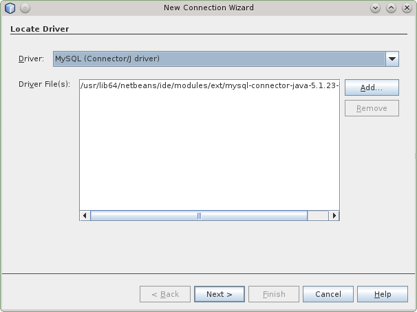 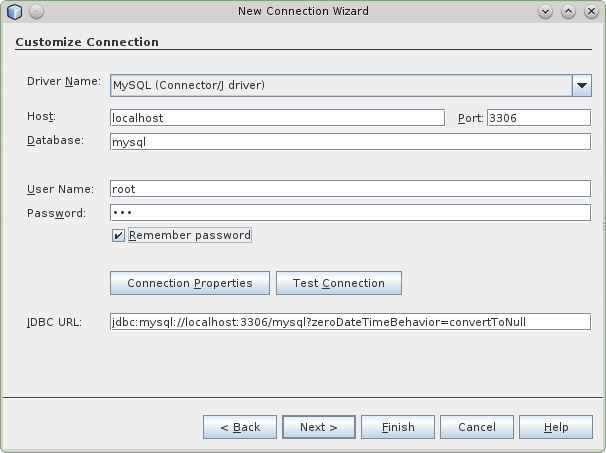
В Java 7 появилось удобное выражение "try-with-resources". Для того чтобы не писать блоки finally {} вызывающие метод close(), нужно писать блок try с ресурсом, например:
try (Connection conn = dataSource.getConnection()) {
try (Statement stmt = conn.createStatement()) {
}
}При сборке проекта в Netbeans собранный артефакт (war или jar файл) автоматически размещается в локальный maven-репозиторий.
Выкладка артефакта из консоли: mvn
deploy. Из netbeans: щелчок правой кнопкой
на проекте: Custom -> Goals -> в поле Goals
ввести deploy и нажать OK. В репозиторий
snapshots можно грузить только артефакты с
версией SNAPSHOT (иначе будет выдана ошибка
400 Bad Request, описание ошибки нужно смотреть
в логе nexus на сервере)
Если нужная библиотека не находиться в центральном Maven-репозитории, например cryptopro или jawin, ее можно установить в сетевой или локальный maven-репозиторий.
Для установки стороннего jar-файла в
сетевой maven-репозиторий используется
команда: mvn -DartifactId=$artifactId
-DgroupId=$groupId -Dversion=$version -Dpackaging=jar -Dfile=$jar
-DgeneratePom=true
-DrepositoryId=nexus-snapshots
-Durl=http://devel.net.ilb.ru:28052/nexus/content/repositories/thirdparty
deploy:deploy-file, где $artifactId, $groupId, $version -
атрибуты артефакта, которые потом нужно
будет указать в pom.xml, $jar - локальный путь
к jar-файлу. При этом в ~/.m2/settings.xml должна
быть запись с авторизационой информацией:
<server><id>nexus-snapshots</id><username>deployment</username><password>deployment123</password></server>
Установка в локальный maven-репозиторий, вариант с GUI:
Открыть диалог "Dependencies" -> "Add Dependency"
Заполнить поля groupId, artifactId и version (поискать примеры "имя библиотеки maven" в google, например "cryptopro maven" или ввести любые данные)
Зависимость будет добавлена в pom.xml и появиться в группе Dependencies
Щелкнуть правой кнопкой мыши по зависимости, выбрать "manually install artifact" и указать путь к jar. Jar установиться в локальный Maven-репозиторий
Создать Job
Указать "Имя Job'а" и выбрать "Создать проект maven2/3"
Заполнить "URL репозитория" в "Управление исходным кодом / Subversion"
Заполнить галочки "Опрашивать SCM об изменениях" - указать H 0 * * * (в репозитории должен быть включен хук!)
Для библиотек (jar): "Добавить шаг после сборки", "Deploy arifacts to Maven repository"
Для сервисов (war): "Add post-build step", "Вызвать цели Maven верхнего уровня" , указать цель "tomcat:redeploy" для автоматической выкладки на devel tomcat
Если приложение
содержит авто-тесты, которые по-умолчанию
выключены, заполнить Goals and options: clean
install -D maven.test.skip=false
E-mail Notification: добавить галочку "Send separate e-mails to individuals who broke the build"
"Сохранить"
На странице проекта выбрать в левом меню "Собрать сейчас"
После окончания сборки, ее лог можно посмотреть в контекстном меню "Вывод на консоль"
Два варианта создания релиза
В контекстном меню проекта Custom/Goals...
выполнить "release:prepare release:perform" (можно одной командой)
Будет 3 вопроса по номерам версий, с предложенными ответами, скорее всего подойдут ответы по умолчанию. Например, идет разработка релиза "1.4-SNAPSHOT".
Версия релиза будет "1.4"
Версия подставляемая к названию проекта в "tags" "1.4"
Новая версия разработки "1.5-SNAPSHOT"
Создастся ветка в "tags", выложиться релиз в репозиторий http://devel.net.ilb.ru:28052/nexus/content/repositories/releases/
В Jenkins/Настройки проекта включить "Maven release build"
В раздел "Pre Steps" добавить команду "svn upgrade" (В Jenkins "Subversion Workspace Version" - 1.7, а плагин "Maven Release" использует svn установленный в системе, более новой версии)
В меню проекта появиться пункт "Perform Maven Release"
Выбрать номера версий (скорее всего подойдут предложенные)
Dry run only? - протестировать сборку (без фиксации, можно выполнять под пользователем Jenkins, то есть свою учетку не указывать)
После выполнения. Создастся ветка в "tags", выложиться релиз в репозиторий http://devel.net.ilb.ru:28052/nexus/content/repositories/releases/
Создать папку branches, если ее еще нет: svn mkdir https://svn.ilb.ru/repos/ics_service_web/branches/ Иначе будет ошибка E160013: File not found: transaction '90-2q', path '/branches/ics-service-web-1.11'
Прописать в ~/.subversion/servers настройку ssl-client-cert-password=<password>
Перейти в локальный каталог tags/ics-service-web-1.11/
Выполнить команду mvn release:branch -DbranchName=ics-service-web-1.11 -DupdateBranchVersions=true -DupdateWorkingCopyVersions=false -DautoVersionSubmodules=true -DreleaseVersion=1.11.1-SNAPSHOT, будет создан бранч
Примержить изменения из trunk
Добавить бранч в jenkins, или изменить url в старом бранче
Сделать релиз
Ресурс - это произвольный файл, например sql-запрос, изображение и др. Ресурсы maven-проекта располагаются в {Other Sources}/{src/main/resources}. При сборке war-файла содержимое данного каталога копируется в каталог WEB-INF/classes, таким образом данные ресурсы становяться доступны стандартным classloader-ом java.
Для размещения ресурса необходимо сначала создать Java Package в каталоге {Other Sources}/{src/main/resources}, и внутри Java Package разместить файл ресурса. Если ресурс используется определенным классом, данный ресурс можно разместить в одноименном с классом package. Например, для того чтобы получить путь к ресурсу report.sql, распологающемуся в одноименном package класса:
try (InputStream is = this.getClass().getClassLoader().getResourceAsStream(file)) { }Для того чтобы включить HTTP-авторизацию в сервисе, необходимо в дескриптор приложения WEB-INF/web.xml добавить настройку
<security-constraint>
<display-name>Tomcat Server Configuration Security Constraint</display-name>
<web-resource-collection>
<web-resource-name>jparestresource</web-resource-name>
<url-pattern>/web/*</url-pattern>
</web-resource-collection>
<auth-constraint>
<role-name>*</role-name>
</auth-constraint>
</security-constraint>
<login-config>
<auth-method>BASIC</auth-method>
<realm-name>jparestresource</realm-name>
</login-config>
<security-role>
<description>anyrole</description>
<role-name>*</role-name>
</security-role>
В качестве role-name можно указать конкретную роль, трубуемую для совершения действия. Параметры login-config и security-role нужны на этапе разработки и тестирования (при запуске в локальном томкате без AJP и модуля tomcatrealm). Логин, пароль и группы пользователя для тестирования необходимо завести в ${CATALINA_BASE}/conf/tomcat-users.xml. В данном файле уже есть пример записи - пользователь ide. Данную запись необходимо скопировать, исправить атрибут username (пароль можно не менять) и заполнить атрибут roles необходимыми группами через запятую. При исполнении через apache (AJP) данные настройки игнорируются, авторизация и опеределние групп идет через LDAP (posix) См. tomcatrealm.
Для того чтобы получить логин авторизованного пользователя и его группы необходимо в класс ресурса добавить свойство @Context private HttpServletRequest hsreq или воспользоваться ContainerRequestFilter.
Пример:
public class AuthorizationHandler implements ContainerRequestFilter {
@Override
public void filter(ContainerRequestContext requestContext) throws IOException {
SecurityContext securityContext = requestContext.getSecurityContext();
String userName = null;
if (securityContext.getUserPrincipal() != null) {
userName = securityContext.getUserPrincipal().getName();
}
}
}
Подключить зависимость logback-classic или просто скопировать в pom.xml:
<dependency><groupId>ch.qos.logback</groupId><artifactId>logback-classic</artifactId><version>1.1.3</version></dependency>
Подложить конфиг logback.xml в Other Sources -> src/main/resources -> default package. Для этого можно вызвать контекстное меню на каталоге src/main/resources, выбрать New -> XML Document, ввести имя logback и в созданный файл вставить содержимое из примера.
Использование: объявить в классе переменную:
private static final Logger LOG = LoggerFactory.getLogger(DocumentsResourceImpl.class);
и логгировать:
LOG.info("TEST");По WSDL уже давно можно генерировать код клиента и сервера прямо из интерфейса IDE. А можно ли так же круто генерировать код REST-клиента и сервера по WADL? С использованием maven-плагина cxf-wadl2java-plugin можно генерировать серверный код и объектную модель данных по технологии WADL-first Development. Так же ограниченный функционал по генерации REST-клиента есть в Netbeans, но пока в нем отсутствует генерация модели данных по вложенным в WADL схемам. То есть, хотя при генерации кода вызова REST-сервиса из репозитория сервисов, например клиента Google Map, объектная модель добавляется в проект, но она не генерируется автоматом, она вложена в виде jar-файла в описание сервиса. Генерация кода по WADL есть и для других языков (php, javascript), но без объектной модели этот код просто "заглушка".
Реализация интерфейса сервиса ничем не отличается от реализации любого другого интерфейса в Java. Класс-реализацию можно сделать вручную или с помощью подсказки Netbeans. Во многих местах кода Netbeans показывает "лампочку" с подсказками. Если встать курсором на имя сгенерированного интерфейса DocumentResource, слева загорается лампочка, выбираем в ней Implement interface. В появившемся окошке жмем OK. Так как сгенерированный класс-реализация создался там же в каталоге Generated Sources и при следующией генерации он стерется, нужно перетащить его в каталог Source Packages в пакет ru.ilb.testappjava и исправить ошибки по подсказкам в лампочках.Так же нужно продублировать у класса аннотацию @Path("document").
Данные действия нужно произвести разово для каждого корневого ресурса WADL. Добавление новых методов в корневой ресурс делается в уже существующем классе с использованием подсказки "Implement all abstract methods".
Шаг 1 - в меню File - New File выбрать категорию Web Services, в ней выбрать Web Service Client.
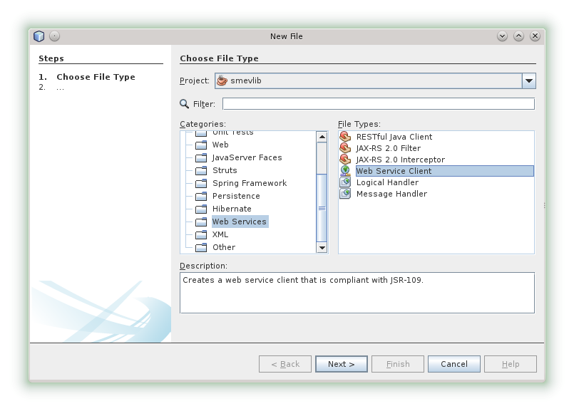
Шаг 2: Указываем URL wsdl сервиса или локального файла и жмем Finish.
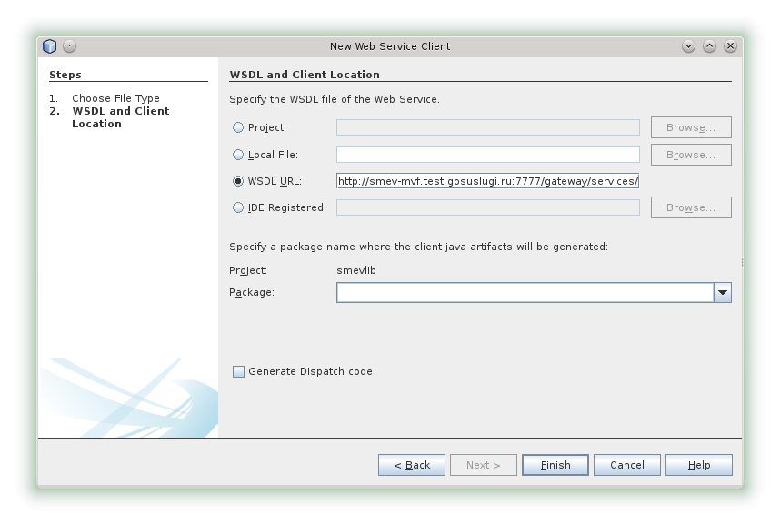
Как сгенерировать код вызова WSDL сервиса: перетащить мышкой в Netbeans нужный сервис в текст программы:
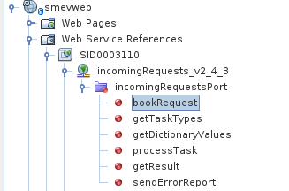
По-умолчанию, для повышения производительности, xslt шаблоны кэшируются в серверном трансформере. Для того что бы у разработчика в режиме deploy-on-save можно было сразу видеть изменения, в файле ${catalina.base}/conf/context.xml необходимо прописать параметр refreshTemplates=true
Если все сделано по инструкции, а ресурс в браузере отвечает 404, 500 или другую ошибку, необходимо проверить, есть ли ошибки при старте приложения или в момент обращения к сервису. Это можно видеть во вкладке Output - Apache Tomcat. Если такой вкладки нет, нужно открыть блок Services (Ctrl-5), развернуть Server -> Tomcat и выбрать View Server Output. В данном логе пишуться отладочные сообщения при старте сервлета и трейсы от исключений. Они бывают довольно длинные, но весь трейс изучать не нужно. В трейсе нужно найти знакомый класс (он будет подчеркнут ссылкой) и мышкой перейти в него для поиска причины ошибки. Если ни одного знакомого класса нет, нужно искать текст ошибки в Google. Во вкладке Output - Apache Tomcat Log можно видеть журнал приложения, если оно пользуется им (например через Logger).
Если при открытии ресурса выходит ошибка "No root resource matching request path {} has been found", необходимо проверить наличие аннотации @Path у класса-ресурса (аннтация ресурса должна дублировать аннотацию интерфейса).
java.lang.NoClassDefFoundError: javax/persistence/spi/PersistenceUnitInfo - нет библиотек eclipselink-2.5.1.jar, javax.persistence-2.1.0.jar в томкате.
java.lang.ClassNotFoundException: com.mysql.jdbc.Driver: нет библиотеки mysql-connector-java-5.1.31.jar в томкате.
java.lang.ClassNotFoundException: org.firebirdsql.gds.GDSException: нет библиотеки jaybird-full-2.2.5.jar в томкате.
Необходимо обновить /opt/tomcat-8/common/lib/
Томкат долго стартует: возможно накопилось много задеплоеных приложений: Services -> Servers -> Apache Tomcat or TomEE -> Web Applications -> контекстное меню Undeploy на не нужных.
Томкат долго деплоит приложение: возможно происходит утечка памяти от постоянного Deploy On Save - нужно рестартануть томкат.
Приложение запущено в режиме Debug но отладчик на точках останова не останавливается: рестартануть томкат.
Томкат не останавливается: Services -> Servers -> Apache Tomcat or TomEE -> контекстное меню Terminate (или через панель задач отфильтровать процесс java и завершить)
Как прочитать InputStream в строку
String
result=new
java.util.Scanner(inputStream,"UTF-8").useDelimiter("\\A").next()
Подключение JPA AttributeConverter через persistence.xml (есть так же вариант в orm.xml):
<class>com.github.marschall.threeten.jpa.LocalTimeConverter</class><class>com.github.marschall.threeten.jpa.LocalDateConverter</class><class>com.github.marschall.threeten.jpa.LocalDateTimeConverter</class>
Подключение JAXB XmlAdapter через package-info.java:
@XmlJavaTypeAdapters({
@XmlJavaTypeAdapter(type = LocalDate.class, value = LocalDateXmlAdapter.class),
@XmlJavaTypeAdapter(type = LocalTime.class, value = LocalTimeXmlAdapter.class),
@XmlJavaTypeAdapter(type = LocalDateTime.class, value = LocalDateTimeXmlAdapter.class)
})
@XmlSchemaTypes({
@XmlSchemaType(name = "date", type = LocalDate.class),
@XmlSchemaType(name = "time", type = LocalTime.class),
@XmlSchemaType(name = "dateTime", type = LocalDateTime.class)
}) Подключение JAXB XmlAdapter через bindings.xml:
<xjc:javaType name="java.time.LocalDate" xmlType="xsd:date" adapter="com.migesok.jaxb.adapter.javatime.LocalDateXmlAdapter" />
<xjc:javaType name="java.time.LocalDateTime" xmlType="xsd:dateTime" adapter="com.migesok.jaxb.adapter.javatime.LocalDateTimeXmlAdapter" />
<xjc:javaType name="java.time.LocalTime" xmlType="xsd:time" adapter="com.migesok.jaxb.adapter.javatime.LocalTimeXmlAdapter" />